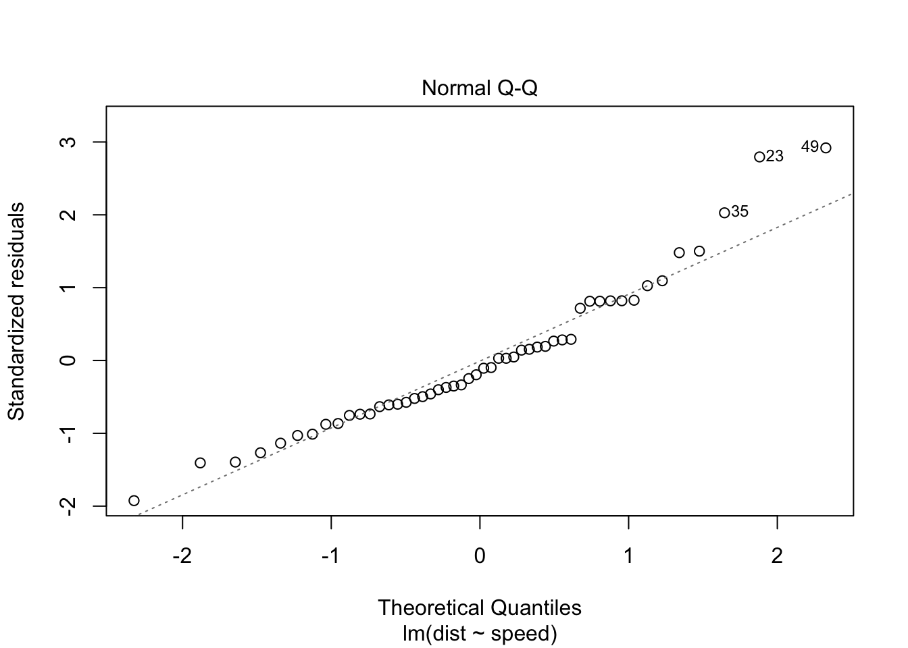
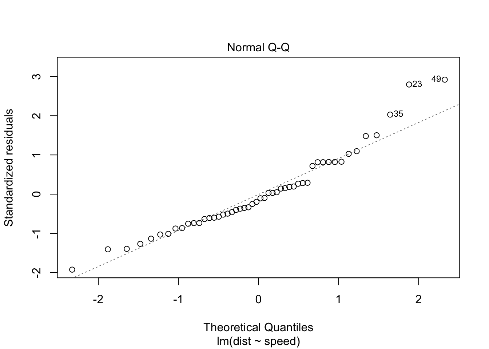
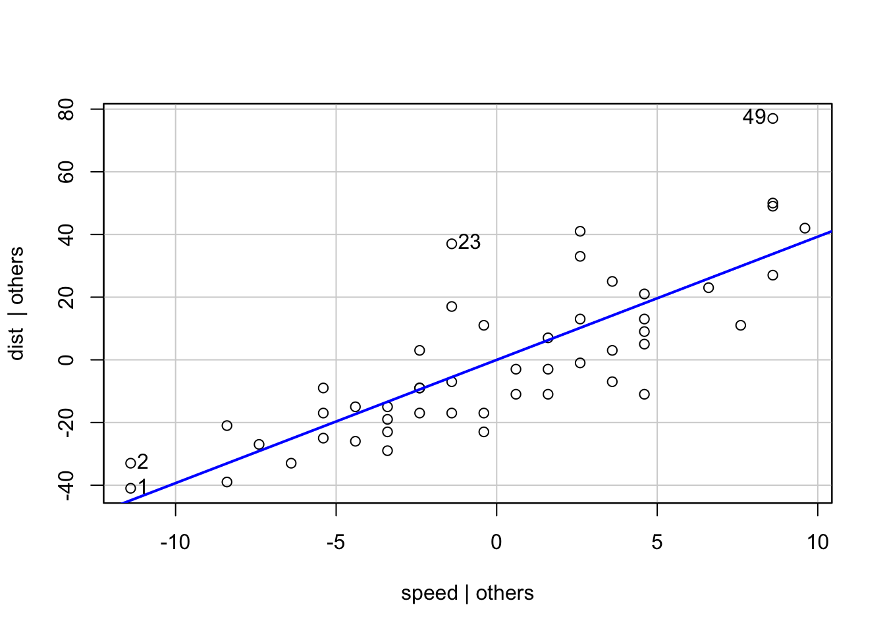

Chapter - 2 Basic Charts
library(gridExtra)
library(hrbrthemes)
library(ggplot2)
paletteDani <- c( "#ffa500", "#DAF7A6", "#5F7992", "#69b3a2", "#ffd561", "#ee5c42", "#C8A2C8", "#5c3170", "#990000", "#C70039", "#34495E", "#909497")Several basic options:
Pie chart
data <- ToothGrowth
dani_theme <-
theme(
axis.title.x = element_blank(),
axis.title.y = element_blank(),
panel.border = element_blank(),
panel.grid = element_blank(),
axis.ticks = element_blank(),
axis.text.x=element_blank(),
legend.title = element_text(face = "bold"),
plot.title = element_text(hjust = 0.5, size = 12, face = "bold")
)
ggplot(data, aes(x="",y = dose, fill = supp)) +
geom_bar(width = 1, stat = "identity") +
coord_polar("y", start = 0) +
scale_fill_manual("Legendname:",
values = paletteDani) +
dani_theme +
labs(title = "Title",
x = "variablX",
y = "variableY"
)Bar chart
ggplot(data, aes(x = dose, y = supp)) +
geom_bar(stat = "identity", fill="#69b3a2", color="#e9ecef") +
theme(legend.position="none")Histogram
ggplot(data = data, aes(len) ) +
geom_histogram(fill="#69b3a2", color="#e9ecef", alpha=0.9, binwidth = 5) +
ggtitle("Title") +
xlab("variablex") +
ylab("variabley") +
theme(plot.title = element_text(size = 11))
Boxplot
ggplot(data=ToothGrowth, aes(x="", y=len, fill="")) +
geom_boxplot(fill="#69b3a2", outlier.colour="red", outlier.shape=8, outlier.size=4) +
theme_ipsum() +
theme(
legend.position="none",
plot.title = element_text(size=12)
) +
ggtitle("Title") +
theme(plot.title = element_text(hjust = 0.5)) +
xlab("")+
ylab("")
Scatter plot
ggplot(data= ToothGrowth, aes(y = len, x = dose)) +
geom_point(size=2) +
geom_smooth(method="lm", color="#69b3a2", fullrange=TRUE,
formula = y ~ x) +
theme(plot.title = element_text(hjust = 0.5)) +
labs(title = "Title",
y = "yname",
x = "xname"
)
Scatter plot with dummies
ggplot(data = ToothGrowth, aes(y = len, x = supp, colour=factor(supp))) +
geom_point(size=2) +
geom_smooth(method="lm", fill = NA, fullrange=TRUE, formula = y ~ x) +
theme(plot.title = element_text(hjust = 0.5)) +
scale_colour_manual(name="Legendtitle",
labels=c("value1", "value2"),values = c("#69b3a2", "#F6726A"))+
labs(title = "Title",
y = "Yname",
x = "Xname"
)Arrange charts next to each other on a page
chart1 <- ggplot(data=ToothGrowth, aes(x="", y=len, fill="")) +
geom_boxplot(fill="#69b3a2", outlier.colour="red", outlier.shape=8, outlier.size=4) +
theme_ipsum() +
theme(
legend.position="none",
plot.title = element_text(size=12)
) +
ggtitle("Title") +
theme(plot.title = element_text(hjust = 0.5)) +
xlab("")+
ylab("")
chart2 <- ggplot(data=ToothGrowth, aes(x="", y=len, fill="")) +
geom_boxplot(fill="#69b3a2", outlier.colour="red", outlier.shape=8, outlier.size=4) +
theme_ipsum() +
theme(
legend.position="none",
plot.title = element_text(size=12)
) +
ggtitle("Title") +
theme(plot.title = element_text(hjust = 0.5)) +
xlab("")+
ylab("")
grid.arrange(chart1, chart2, nrow=1, widths=c(0.9,1))
Shows the amounts of missing values (NA) in a data set
library(VIM)
aggr(cars, numbers = TRUE, prop = c(TRUE, FALSE), cex.axis = 0.5)Density plots with semi-transparent fill
ggplot(data = ToothGrowth, aes(x = len, fill = supp)) +
geom_density(alpha=.3) +
theme(
plot.title = element_text(size=15)
) +
ggtitle("Density plot") +
theme(plot.title = element_text(hjust = 0.5, face= "bold")) +
xlab("")+
ylab("Density")
Correlation matrix - pairs panel
library(psych)
pairs.panels(iris,
method = "pearson",
hist.col = "#00AFBB",
density = TRUE,
ellipses = TRUE
)
Simple plots:
model <- lm(dist ~ speed, data = cars)
plot(model) 

plot(model, 4) # cook distancelibrary(car)
avPlots(model)